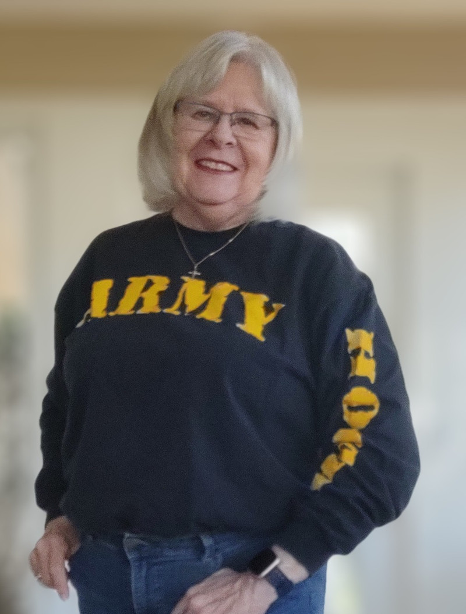

01
Post Service Officer
Get guidance with VA benefits, disability claims, healthcare enrollment, survivor benefits and more.
Explore veteran assistance ↗OCALA, FLORIDA
American Legion Ocala Memorial Post 27 has been serving veterans and their families for more than a century.
WELCOME TO POST 27
American Legion Post 27 has been serving Veterans in Ocala since 1919. As we begin our second century of supporting Veteran causes, we invite all Veterans and their spouses to join us.
Explore veteran services →MEETINGS
Meetings are held on the first Tuesday of every month.
HOW WE SERVE
Our Post Service Officers connect Veterans and their families with free, confidential help and local, state and federal resources.
Get guidance with VA benefits, disability claims, healthcare enrollment, survivor benefits and more.
Explore veteran assistance ↗Find support for housing, education, employment, legal assistance, entrepreneurship and mental health.
Visit the bulletin board ↗POST SERVICE OFFICER
Our Service Officers are advocates for Veterans and their families. They provide free, confidential assistance and help you navigate the system with dignity and respect.
Request assistance ↗POST 27 VETERAN SERVICES
Post Service Officers provide free, confidential assistance with benefits, claims, healthcare enrollment, survivor benefits and access to local, state and federal resources.

YOUR POST SERVICE OFFICER
Christy helps Veterans and their families understand their options, prepare for the next step and connect with trusted community partners.
Bring your questions. You do not have to navigate the system alone.
Request a conversation ↗Connect with rental assistance, local and federal housing programs, and VA home-loan resources.
Get guidance through VA Healthcare, TRICARE, Medicare and Medicaid enrollment and referrals.
Understand the VA compensation and pension process and connect with FDVA or County Veteran Service Offices.
Explore the Post-9/11 GI Bill, Vocational Rehabilitation and DEA resources for Veterans and dependents.
Find resume, job placement and internship support through CareerSource and other community partners.
Get connected to local legal resources, Veteran Treatment Court and estate-planning support.
Connect with training and community resources to help Veteran-owned businesses get started and grow.
Find confidential connections to local nonprofits and VA resources for mental health and wellbeing.
Post 27 provides information, guidance and referrals. A Service Officer can help identify the right next step for your situation.
THE PEOPLE OF POST 27
Veterans and community members giving their time, experience and care to move our mission forward.

COMMANDER
U.S. Navy veteran and Air Force critical care nurse dedicated to serving Veterans and the Ocala community.
Michelle served as an Interior Communications Technician in Pearl Harbor before becoming an Air Force critical care nurse, with assignments in Texas, Nebraska and Germany.

VICE COMMANDER
U.S. Marine Corps veteran and Executive Director of Veterans Helping Veterans USA.
Todd served in the Marine Corps from 1982 to 1990 and later worked as a police officer in Connecticut. Since arriving in Ocala, he has served the local Veteran community.
ADJUTANT
U.S. Navy veteran with 21 years of service aboard ships and assignments around the world.
Tom served aboard USS Nimitz, USS America, USS Dahlgren and USS Comte de Grasse, with shore duty in the Philippines, Maryland and Belgium.
HISTORIAN
Past Adjutant and Past Commander of Ocala Memorial Post 27, serving the Post's history and legacy.
Brian is a U.S. Navy Veteran who served at the Naval Air Facility in Naples, Italy, and aboard USS Northampton and USS Sellers.

CHAPLAIN
U.S. Navy veteran and active member of AMVETS and Sons of the American Legion.
Ken served as an Aviation Machinist Mate at NAS Sanford, NAS Albany and aboard USS Saratoga, working in power plants and fuel systems.
SERGEANT AT ARMS
Army Honor Guard and 26th Army Band veteran who continues to serve the Veteran community.
Rich served with the 26th Army Band and Army Honor Guard, rendering Taps at the U.S. National Cemetery on Long Island.

FINANCE OFFICER
U.S. Army veteran, lifetime Legion member and member of the Marion County Veterans Council.
Chip trains and certifies K-9s for Florida and is also a lifetime member of the VFW, AMVETS and Korean War Veterans Association.

EXECUTIVE COMMITTEE
Army and Air Force veterans bringing experience in service, leadership and community.
Christy served as a Pentagon medical director's secretary and later became an accountant and CPA. Cliff served four years in the Air Force at SAC bases in Massachusetts and Orlando.
Select any leader above to read more about their service.
GET INVOLVED
JOIN THE TEAM
Tell us how you would like to get involved. Your message will be sent to the Post 27 contact inbox.
POST 27 RESOURCES
POST 27 INFORMATION
Important Post information, forms and announcements in one place.
Ask about a resource →STAY CONNECTED
Keep up with Post news, updates and the latest opportunities to serve.
Subscribe for updates →MEETING RECORDS
Find meeting information and broader American Legion news through the Post.
See meeting details →POST 27 BULLETIN BOARD
Events, announcements and useful resources published by Post 27.